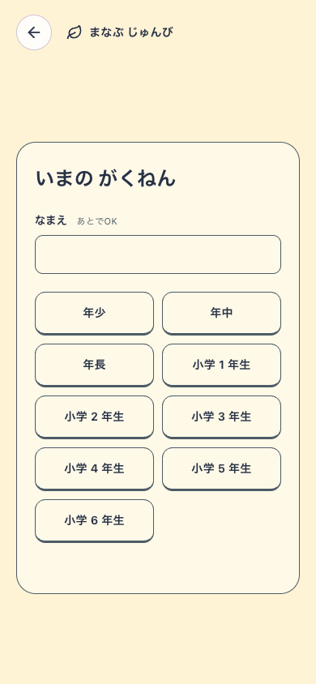
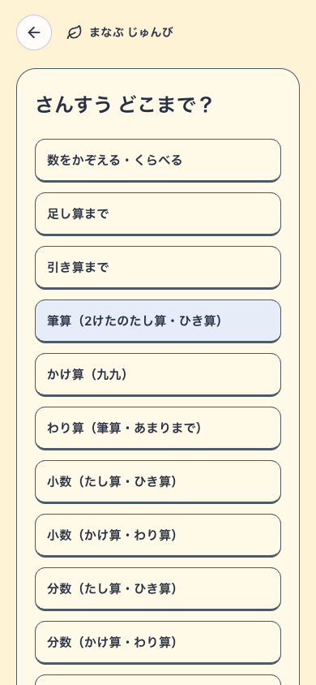
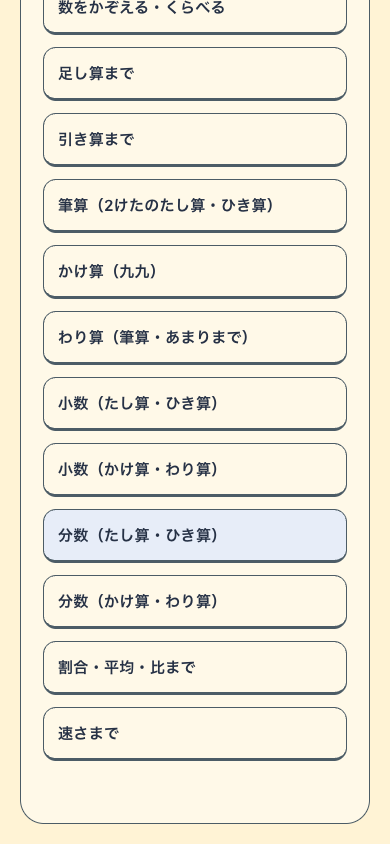
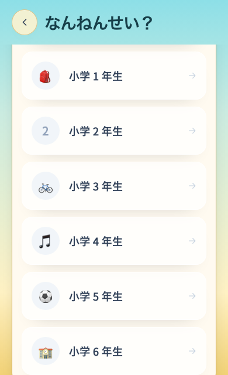
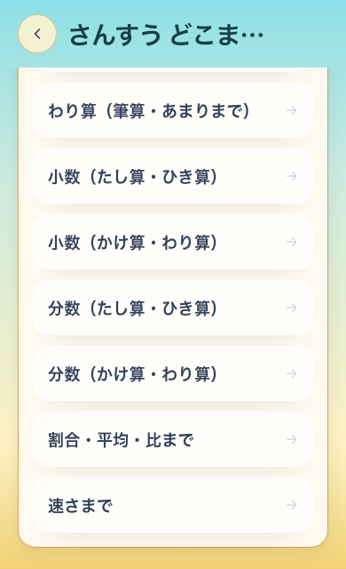
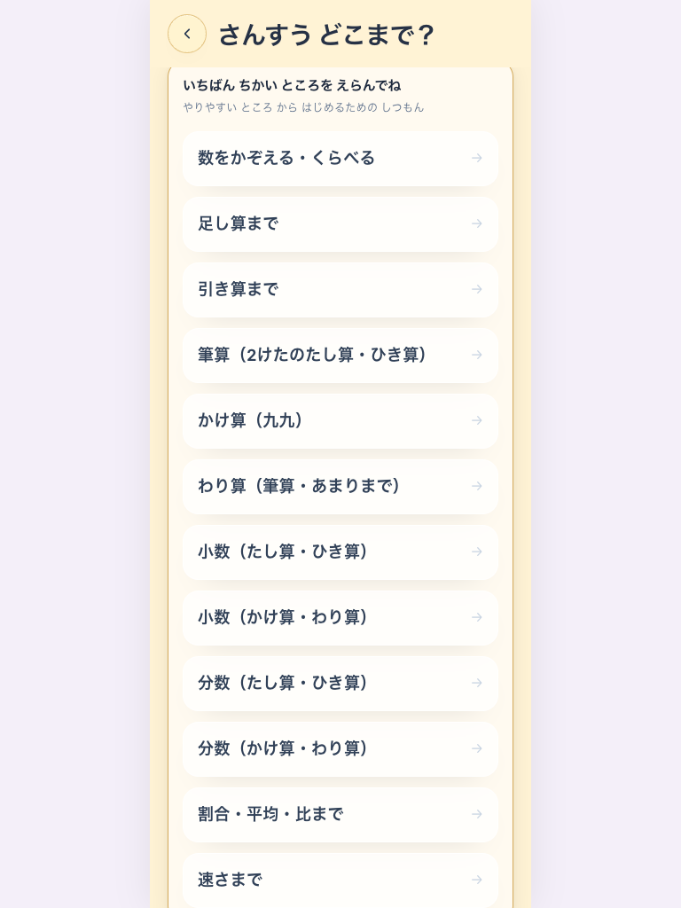
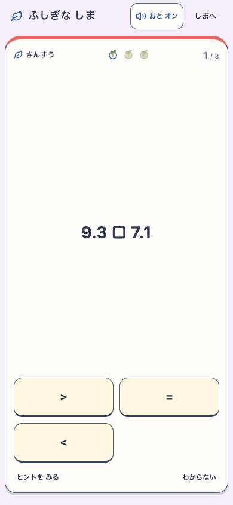
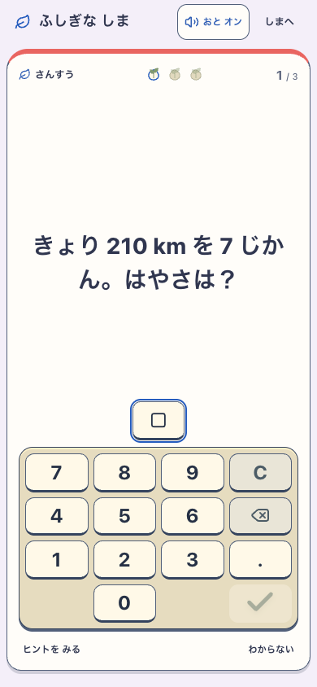

初回設定の学習範囲
九九より先のわり算・小数・分数・割合・速さを追加。学年と全12択をスクロールでき、選択した範囲に応じて開始します。
DEVの実操作記録です。390×844、768×1024、390×640で初回・追加・通常版の一覧と保存を確認。公開build・子どもの理解や学習効果の受入ではありません。島の設定面候補は island-touch-first-v1。
検証記録 · 初回と追加 · 範囲別の開始 · 通常版
初回：年少〜小学6年
初回：到達目安の上部
初回：割合・速さまで
通常版：低い画面から小学6年を選択
通常版：低い画面から最後の選択肢
追加：共通の12択
分数選択後の最初の問題
速さ選択後の最初の問題